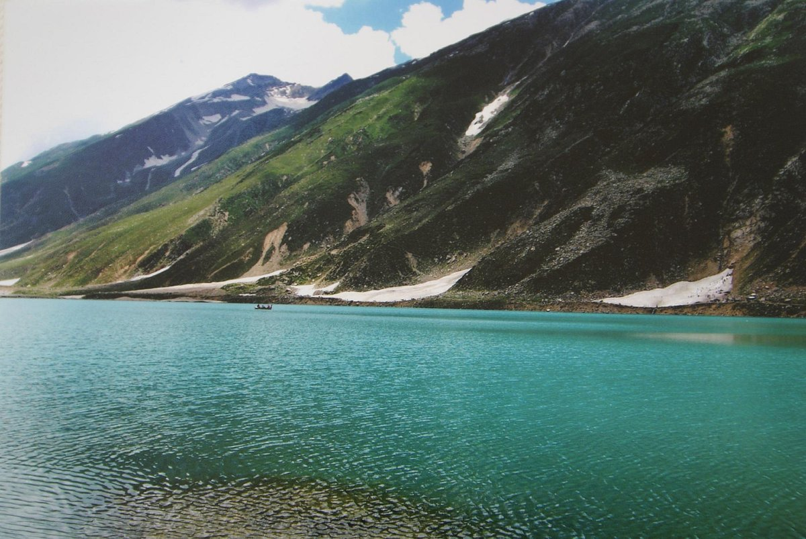

Favorite Cities

Swat
Swat District, also known as the Swat Valley, is a district in the Malakand Division of Khyber Pakhtunkhwa, Pakistan. Known for its stunning natural beauty, the district is a popular tourist destination.

Naran
Naran is a town and popular tourist destination in the upper Kaghan Valley in the Mansehra District of the Khyber Pakhtunkhwa province of Pakistan. It is located 119 kilometers from Mansehra city at an altitude of 2,409 meters. It is located about 65 kilometers away from Babusar Top.